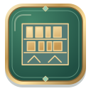
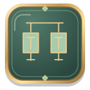

长期积累
百局有成
通关 100 个不同编号
+500 XP50 项成就 · 50 张原创 SVG 插画 · 八个系列
这是插画预览，50 项最终成就设计，隐藏成就在本预览中完整展示。

通关 100 个不同编号
+500 XP通关 500 个不同编号
+1,500 XP通关 1,000 个不同编号
+3,000 XP四种难度各通关 25 个不同编号
+1,000 XP1 分钟内通关
+500 XP20 个不同编号在 2 分钟内通关
+600 XP无提示、无撤销，2 分钟内通关
+600 XP专家局无提示、无撤销，3 分钟内通关
+1,000 XP全程不使用中转格通关
+600 XP
困难局全程最多占用两个中转格并通关
+500 XP专家局全程最多占用两个中转格并通关
+1,000 XP四格全满且无空列的局面之后通关
+500 XP10 个不同编号全程最多占用两个中转格并通关
+700 XP整理八张连续有序牌后通关
+300 XP整理出 K 到 A 完整有序牌组后通关
+1,000 XP一次移动至少八张牌后通关
+800 XP从收牌区取回牌后通关
+300 XP关闭自动收牌、不使用一键完成通关
+500 XP无提示、无撤销通关
+500 XP专家局无提示、无撤销通关
+1,000 XP80 次操作内通关
+400 XP65 次操作内通关
+800 XP20 个不同编号无提示、无撤销通关
+1,000 XP通关 25 个不同专家编号
+1,000 XP通关 100 个不同专家编号
+2,000 XP连续通关 10 个不同编号
+800 XP连续通关 20 个不同编号
+1,500 XP连续通关五个不同专家编号
+1,200 XP重玩将个人最佳用时缩短至少 20%
+300 XP重玩将个人最佳步数减少至少十步
+300 XP同一局同时刷新编号最佳用时和步数
+600 XP十个不同编号刷新个人最佳用时
+800 XP首次完成每日大师挑战
+200 XP完成 10 个不同日期的每日大师挑战
+600 XP完成 30 个不同日期的每日大师挑战
+1,500 XP不用提示、不撤销，通关 3 个不同编号的每日大师对局
+1,000 XP首次完成每日残局挑战
+200 XP完成 10 个不同日期的每日残局挑战
+600 XP分别完成收官、中转解围、腾空行动三种残局
+800 XP连续 7 天在当天完成每日残局挑战
+1,000 XP首次完成每日特殊规则
+200 XP完成 10 个不同日期的每日特殊规则
+600 XP分别完成封印一格、王者空列、花色优先三种规则
+800 XP首次完成每日精准挑战
+200 XP完成 10 个不同日期的每日精准挑战
+600 XP首次完成每日同花挑战
+200 XP完成 10 个不同日期的每日同花挑战
+600 XP首次完成每日逆序挑战
+200 XP完成 10 个不同日期的每日逆序挑战
+600 XP在 5 个不同日期的每日精准挑战中获得金牌
+1,000 XP